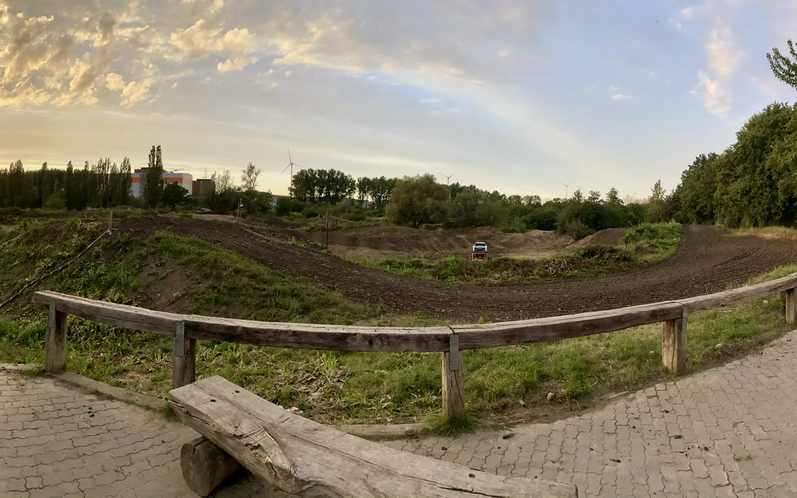

Die Hauptstrecke
Test 711. Die Strecke wurde in den Jahren 2017/2018 nach den Zeichnungen von Stefan Ludwig umgebaut und wird seitdem immer weiter optimiert. Mit einer enormen Länge von ca. 1.900 Metern bietet sie ausreichend Platz, um sowohl das Können bei hohen Geschwindigkeiten als auch die Kurventechnik perfekt zu verfeinern.
Details im Überblick
- Streckenlänge: ca. 1.900 Meter
- Bodenbeschaffenheit: Harter Lehmboden, der ambitionierte Fahrer technisch fordert.
- Sprünge: Insgesamt 15 abwechslungsreiche Sektionen, die viel Abwechslung bieten.
- Bewässerung: Eine permanente Bewässerung soll einen Großteil der Strecke abdecken und damit der Staubentwicklung entgegenwirken.